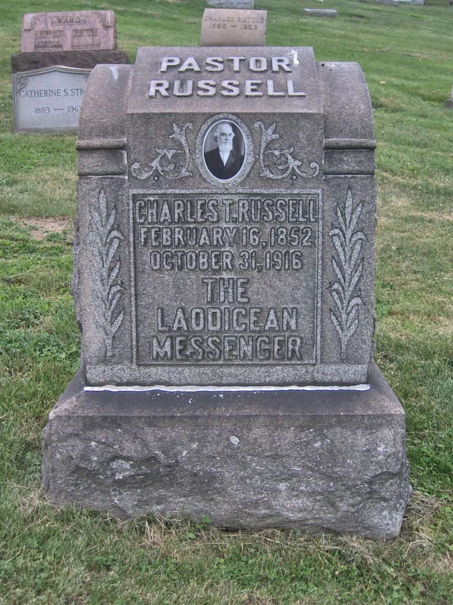
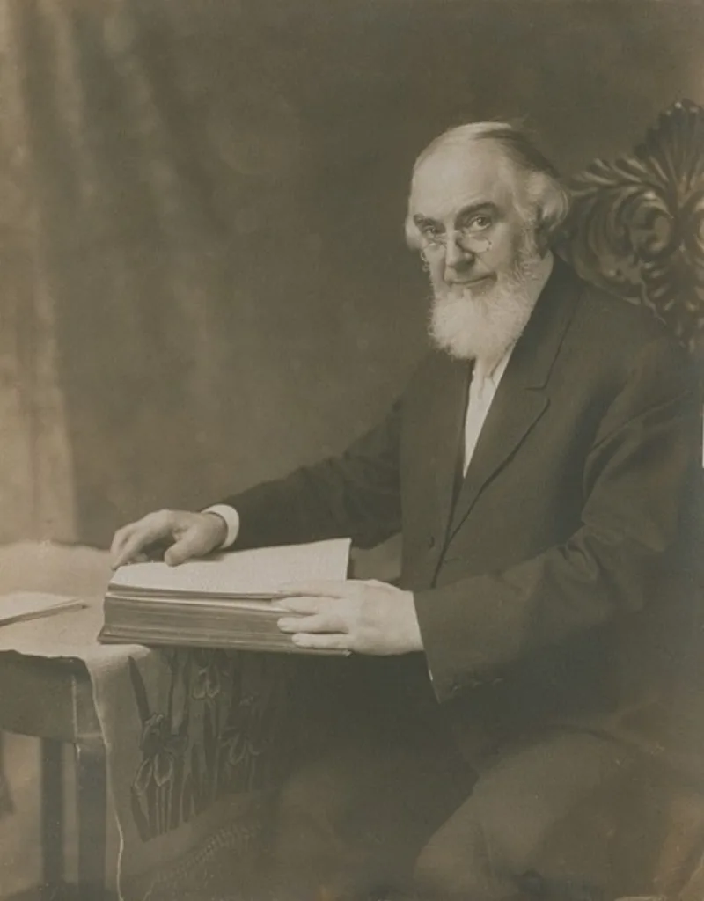
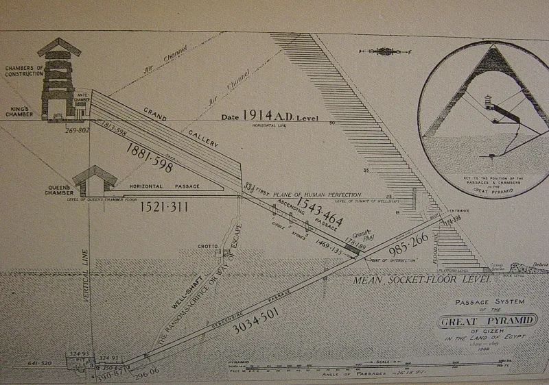

The Witness answer holds up. Do not lead with this one.
That Charles Taze Russell was a Freemason. People point to the winged sun and the cross-and-crown symbols on early Watch Tower covers.
They point to the pyramid monument near his grave. And they quote a 1913 address in San Francisco where he said he was a free and accepted mason.
He was speaking figuratively, and he denied membership in the same speech. His words were plain: "I have never been a mason." He added that something he did or said might differ from what a mason would do or say.
No Masonic lodge has a record of him. The Grand Lodge of British Columbia and Yukon keeps a research page on this claim and confirms there is none.
The cross and crown was a common Protestant emblem then. The pyramid came from the pyramid theories Russell took from Piazzi Smyth.
That is an embarrassment, but it is a different one. He also criticized Freemasonry in print in the Watch Tower of June 1895.
Barbara Anderson, an ex-Witness researcher, rejects the charge. Masonic bodies have no reason to protect him and report nothing.
The conspiracy version needs him to be a secret member of an order he publicly discouraged.
Do not use this one. It fails on the primary source.
It shows an informed Witness that you deal in old internet lore, and that poisons the verified material beside it. Russell has real liabilities: the pyramid as God's stone witness, the 1874 and 1914 chronology, and the miracle wheat affair.
Use those.
"I've seen the Freemason claim and I don't think it holds up. Can we talk about the 1874 date instead?"



Russell said plainly 'I have never been a mason,' and no lodge has a record.
Even hostile ex-Witness researchers reject the claim. Barbara Anderson of Watchtower Documents is one. Russell used masonic imagery as a figure of speech. He was speaking to a San Francisco audience. True Bible believers, he said, 'are all masons of the highest order, fashioned by the Almighty as living stones for the heavenly Temple.'
He also said plainly that he had never joined. Masonic bodies have no stake in shielding him, and they report no record. Russell attacked Freemasonry in print in the Watch Tower of June 1895. So the plot version needs him to be a secret member of an order he warned people off.
Do not use this one. It fails on the source, and serious critics reject it.
Flagged avoid. The claim fails on the primary source. Serious critics of the Watchtower reject it. Using it shows any informed Witness that the site deals in debunked lore. That poisons the verified material beside it.
The real Russell liabilities are damaging enough on their own. There is the pyramid as God's stone witness. There is the 1874 and 1914 chronology. And there is the miracle-wheat affair.
A site built on the line 'their own books concede this' cannot afford one entry built on a misquote.